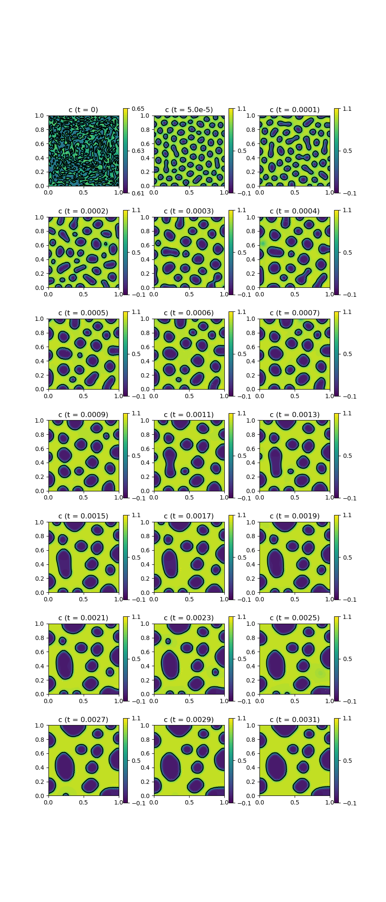

260 : Cahn-Hilliard Equations 2D
This example studies the mixed form of the Cahn-Hilliard equations that seeks $(c,\mu)$ such that
\[\begin{aligned} c_t - \mathbf{div} (M \nabla \mu) & = 0\\ \mu - \partial f / \partial c + \lambda \nabla^2c & = 0. \end{aligned}\]
with $f(c) = 100c^2(1-c)^2$, constant parameters $M$ and $\lambda$ and (random) initial concentration as defined in the code below.
module Example260_CahnHilliard2D
using GradientRobustMultiPhysics
using ExtendableGrids
using GridVisualize
using ForwardDiff
using DifferentialEquations
# parameters and initial condition
const f = (c) -> 100*c^2*(1-c)^2
const dfdc = (c) -> ForwardDiff.derivative(f, c)
const M = 1.0
const λ = 1e-2
const c0 = DataFunction((result, x) -> (result[1] = 0.63 + 0.02 * (0.5 - rand());), [1,2]; dependencies = "X", bonus_quadorder = 10)
# everything is wrapped in a main function
function main(;
verbosity = 0, # larger numbers increase talkativity
order = 1, # finite element order for c and μ
nref = 5, # refinement level
τ = 1//100000, # time step (for main evolution phase)
use_diffeq = false, # use DifferentialEquations.jl or internal evolution
time_integration_rule = BackwardEuler, # time integration scheme for internal evolution
use_newton = true, # use newton or fixed-point iteration with constant system matrix ?
Plotter = nothing, # Plotter (e.g. PyPlot)
)
# set log level
set_verbosity(verbosity)
# initial grid and final time
xgrid = uniform_refine(grid_unitsquare(Triangle2D; scale = [1,1]), nref)
# define main level set problem
Problem = PDEDescription("Cahn-Hilliard equation")
add_unknown!(Problem; unknown_name = "c", equation_name = "concentration equation")
add_unknown!(Problem; unknown_name = "μ", equation_name = "chemical potential equation")
add_operator!(Problem, [1,2], LaplaceOperator(M; store = true))
add_operator!(Problem, [2,2], ReactionOperator(1; store = true))
add_operator!(Problem, [2,1], LaplaceOperator(-λ; store = true))
# add nonlinear reaction part (= -df/dc times test function)
function dfdc_kernel(result, input)
result[1] = -dfdc(input[1])
end
if use_newton # ... either as nonlinear operator with AD-Newton
add_operator!(Problem, 2, NonlinearForm(Identity, [Identity], [1], dfdc_kernel, [1,1]; name = "(-∂f/∂c, μ)", newton = true, bonus_quadorder = 2))
else # ... or as a simple LinearForm that is iterated in fixpoint iteration (with constant matrix)
add_rhsdata!(Problem, 2, LinearForm(Identity, [Identity], [1], Action(dfdc_kernel, [1,1]; bonus_quadorder = 2); factor = -1, name = "(-∂f/∂c, μ)"))
end
# print problem definition
@show Problem
# generate FESpace and solution vector and interpolate initial state
FES = FESpace{H1Pk{1,2,order}}(xgrid)
Solution = FEVector([FES, FES])
interpolate!(Solution[1], c0)
# generate time-dependent solver
TProblem = TimeControlSolver(Problem, Solution, time_integration_rule;
timedependent_equations = [1], # only 1st unknown c has a time derivative
skip_update = use_newton ? [1] : [-1], # matrix will be only updated if Newton ist used
maxiterations = 50, # maximum number of fixed-point iterations (in each timestep)
target_residual = 1e-6, # stop if this nonlinear residual is reached (in each timestep)
T_time = use_diffeq ? Float64 : typeof(τ))
# init plot (if order > 1, solution is upscaled to finer grid for plotting)
p = GridVisualizer(; Plotter = Plotter, layout = (7,3), clear = true, resolution = (900,2100))
if order > 1
xgrid_upscale = uniform_refine(xgrid, order-1)
SolutionUpscaled = FEVector(FESpace{H1P1{1}}(xgrid_upscale))
interpolate!(SolutionUpscaled[1], Solution[1])
else
xgrid_upscale = xgrid
SolutionUpscaled = Solution
end
nodevals = nodevalues_view(SolutionUpscaled[1])
scalarplot!(p[1,1], xgrid_upscale, nodevals[1]; limits = (0.61, 0.65), xlabel = "", ylabel = "", levels = 1, title = "c (t = 0)")
# prepare mass calculation
total_mass_integrator = ItemIntegrator([Identity])
mass = evaluate(total_mass_integrator, Solution[1])
@info "mass (t = 0) = $mass"
# advance in time, plot from time to time
τstep = τ
for j = 1 : 20
if j < 3 # start with slightly smaller timestep
τstep = τ//2
elseif j < 9
τstep = τ
else # increase timestep a bit later
τstep = τ*2
end
if use_diffeq
advance_until_time!(DifferentialEquations, TProblem, τstep, TProblem.ctime+10*τstep; solver = ImplicitEuler(autodiff = false), abstol = 1e-3, reltol = 1e-3, adaptive = true)
else
advance_until_time!(TProblem, τstep, TProblem.ctime+10*τstep)
end
if order > 1
interpolate!(SolutionUpscaled[1], Solution[1])
end
mass = evaluate(total_mass_integrator, Solution[1])
@info "mass (t = $(Float64(TProblem.ctime))) = $mass"
scalarplot!(p[1+Int(floor((j)/3)),1 + (j) % 3], xgrid_upscale, nodevals[1]; xlabel = "", ylabel = "", limits = (-0.1,1.1), levels = 1, title = "c (t = $(Float64(TProblem.ctime)))")
end
end
endThis page was generated using Literate.jl.
